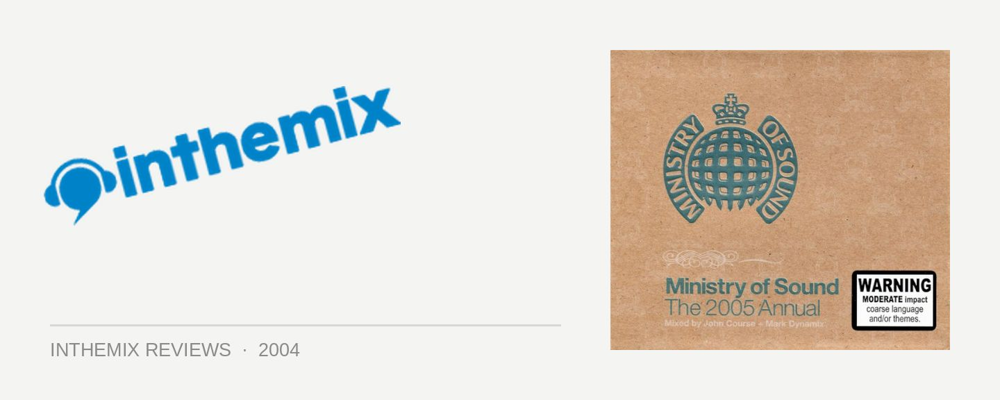

Various Artists - Ministry of Sound: The 2005 Annual mixed by John Course & Mark Dynamix
(Ministry of Sound Records/EMI)
Another year, another Ministry of Sound Annual CD. In the liner notes DJ John Course conveys his surprise that we’ve reached that time of the year already – and me myself, I’m flabbergasted that we’ve again arrived at the point were the Ministry are rolling out yet another addition of the Annual off the production line. But to get all snobby and elitist over it would be to miss the point – and to miss out on a whole lot of fun. Because the Annual series are one the biggest selling dance compilations in Australia, and in the past have encapsulated perfectly the Aussie Ministry of Sound’s ability to breach the gap between the dance music underground and Top 40 lovin’ mainstream music listeners. Again the production is taken care of by two very reliable names in the DJ world, with John Course on the commercial funky house side of things while Mark Dynamix takes care of electro, house, breaks and everything else in between. Balance leads to harmony in all things, right?
Right off the bat, John Course’s CD is one big load of cheeseball fun – nothing more, nothing less. He kicks off the proceedings with the latest piece of superlative cheddar released on the Ministry of Sound label – Eric Prydz’s Call on Me, built around a sample from 80’s crooner Steve Winwood. As formulaic and unimaginative as it is, it’s a crowd-pleasing stormer that’s sure to put a smile on your dial, and is successfully followed up by US progressive duo Deep Dish’s crossover into mainstream success Flashdance. As it is Course’s task to satisfy the batty house contingent, I was expecting it to be all downhill from there – but to my genuine surprise, he holds back on the cheese and instead serves up extra servings of driving funk. It certainly has its fair share of handbag house, but with inclusions like Jan Driver’s electro-breakin’ Ladies Want It and Junior Jack’s tongue-in-cheek dig at 80’s vapidness Stupidisco, it has a little more edge and substance than you’d expect from a lowest-common-denominator house compilation. Whether it’s due to Course being in top form or because it was a particularly strong year in house, it’s hard to tell. But stacked up alongside some of the steaming piles of processed cheddar that John Course has served up for the Ministry in the past, it’s hard not to be satisfied with the fine palette of tastes on offer with his 2005 Annual contribution.
Say the word “electro” to yourself for a moment. Just exactly how far the 80’s revival would penetrate our collective consciousness this year no one could have possibly predicted. But lo and behold, the biggest surprise was that the once sickeningly trendy genre actually began to produce decent music. So fittingly, Mark Dynamix’s CD begins with what was not only one of this year’s best songs, but probably the greatest dance record released since Planet Funk’s Chase the Sun – none other than Mylo’s Drop The Pressure. Along with the Freestyler’s Push Up (which is featured later on in the disc), they make for electro’s defining moments – and the moment I was convinced that electro was no longer crap. And with Dynamix this year finally taking up his promise to begin producing, we are also treated to his own delicious concoction of funky progressive-tech in the form of Identify Me. For someone who only just caught the production bug a few months ago, it’s incredibly impressive.
But surprisingly, it is the typically dependable Dynamix who fails to hold up his end of the bargain on this year’s MOS Annual. He makes passing reference to the “larger than usual collection of future hits” on the CD in the liner notes, and herein lies the problem – an Annual isn’t meant to be a collection of the latest underground tunes. I was looking forward to an impeccably crafted journey through all of the different tunes that invaded our headspace this year, but what we’ve got instead is something more like a Clubbers Guide to 2005. There is no denying his unrivalled talent as a DJ, and Dynamix’s ear for picking cranking tunes isn’t in question – from the whirring bass of Nasty Girls to the sublime disco-tech of Eric Prydz’s mix of Lola’s Theme, these cuts are hot. It makes for a sublime mash-up of more genres than you can poke a stick at, but as impeccable as his DJing skills may be, we’ve never heard any of these tracks before and they don’t have a place on the 2005 Annual. This is a shame, because when Dynamix does stick to the formula – dropping treats like Starsailor’s Four to the Floor, Infusion’s Girls Can Be Cruel and Moguai’s awesome guitar grindin’ Freaks – it’s absolutely irresistible. But otherwise, it doesn’t meet the requirements of an Annual compilation and becomes just another “future hit-picks” selection.
What was in the past was one of Australia’s most reliable dance compilations has turned more than a little frustrating in the 2005 edition. The crass commercialism of John Course’s CD needs to be balanced out by Mark Dynamix’s effortless ability to skim through a multitude of different genres in the blink of an eye, but while he’s as good as ever it’s hard not to be disappointed with the direction taken on the 2005 Annual. Those yearning for a CD they’ll be able to pull out in 5 years for a taste of cranking tunes from the past will be sorely disappointed, because what we’ve got instead is just another slightly bland dance compilation. But who am I to criticise: without a doubt it’s gonna go on to sell bucketloads, and before you know it yet another MOS Annual will be rolling off the production line.